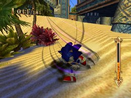

Skill Element Groups
The Basics
Each skill is in one of three Element groups. Blue indicates Wind type, red indicates Flame type, and purple indicates Dark type.
Wind type skills upgrade Sonic’s movements, and include skills such as Quick Step and Speed Up.

Flame type skills upgrade Sonic’s attacks, and include skills such as Fire Tackle and Fire Gaze.

Dark type skills have a variety of special effects, such as experience and Ring-related skills like Ring Bonus and Cancel Absorber.

These element groups simply indicate the type of effect the skill has, and they don’t affect Sonic’s abilities. But they can activate certain skills, so keep them in mind when using those skills.
 RSS
RSS